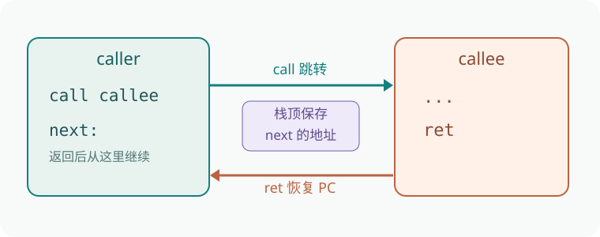
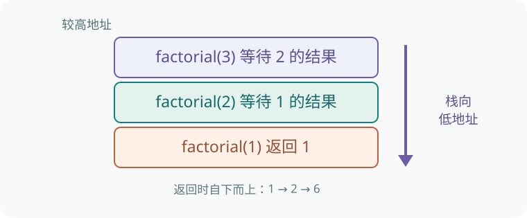

CSAPP · 06 / PROCEDURES & THE STACK
函数返回时，CPU 怎么知道该回哪里？
一个 call 可能改变两件事：控制流转去被调用函数，返回地址被保存在栈上。把这个最小机制看清后，再讨论参数、寄存器所有权、16 字节对齐和递归栈帧，就不会把“典型编译结果”误以为“所有函数都一样”。
01 · 一次调用：先记住来路，再跳向目标
想象 main 正在执行 call square。对常见的 x86-64 近调用而言，处理器先把调用指令后面那条指令的地址压到栈顶，然后把指令指针改为 square 的入口。ret 则从栈中取回地址，继续执行调用者的后续指令。

call/ret 的核心约定是“保存去向 / 恢复去向”。图省略了栈指针的字节级更新及间接调用等变体。long square(long x) { return x * x; }
long twice_square(long x) {
long y = square(x);
return y + y;
}
/* 下面是调用过程的概念，不是指定的编译输出：
caller: 把参数放在指定位置 → call square
callee: 计算结果放入 %rax → ret
caller: 从 call 的下一条指令继续 */在 64 位近调用的典型情形，call 让 %rsp 减少 8 并写入返回地址；ret 读取该地址并让 %rsp 增加 8。实际程序还可能有栈帧调整、寄存器保存和硬件控制流保护，不应把“压入 8 字节”误当作完整函数开销。
02 · 栈帧是约定出来的空间，不是固定模板
x86-64 用户态程序常用向低地址增长的栈。每次函数调用都拥有自己的动态执行上下文，但编译器未必为每个函数分配传统意义上显式的栈帧。寄存器足够时，叶子函数甚至不必调整 %rsp；优化时也可能省略帧指针 %rbp。
区分硬件与编译器：call 保存返回地址是机器指令的行为；保存 %rbp、为局部变量开空间、保存 %rbx 等则依赖 ABI 要求和实际生成代码，不能由源代码中的大括号推断。
在需要存栈的函数里，可以用下图的抽象层次理解递归调用。这不是精确内存偏移图，并不保证每个局部变量与返回地址按固定顺序相邻。

03 · ABI：两段机器代码事先约好的规则
本教程示例采用 Linux 等 Unix-like 环境常用的 System V AMD64 ABI，主要讨论普通整数/指针参数。它与 Windows x64 ABI 不同；结构体、浮点、可变参数及特殊返回值有更复杂的分类规则。
| 角色 | 常见寄存器 | 谁负责保留原值 |
|---|---|---|
| 整数/指针参数 1–6 | rdi, rsi, rdx, rcx, r8, r9 | 调用者不能假定调用后仍保持不变 |
| 整数/指针返回值（通常） | rax | 调用者读取结果 |
| 被调用者保存 | rbx, rbp, r12–r15 | 如果使用，callee 恢复原值；rsp 也要恢复 |
| 调用者保存（典型整数寄存器） | rax, rcx, rdx, rsi, rdi, r8–r11 | caller 如需跨调用保存就自行处理 |
一个 ABI 约定带来实际效果：由不同源文件、编译器或语言实现的函数只要共同遵守同一 ABI，就可以正确传递参数并返回。多于六个普通整数参数时，溢出的参数按 ABI 规则放在栈上的参数区，而不是“第七个自动落在某个固定寄存器”。
为什么总强调 16 字节对齐？
在 System V AMD64 的常规调用边界，执行 call 之前，调用者按约定令栈指针满足 16 字节对齐。因为调用又压入 8 字节返回地址，被调用函数入口时通常是 (%rsp + 8) 可被 16 整除。
caller 执行 call 之前
callee 刚进入时
这是调用点的约定，不代表整个函数执行期间 %rsp 永远保持该模值。SysV 用户态还允许特定场景使用栈指针下方的 128 字节 red zone，例如不需要继续调用的叶子函数；不要把它照搬到内核或其它 ABI。
重要边界：“所有参数走寄存器”“每个函数都有 push %rbp”“递归一定比迭代慢一个固定纳秒数”都不成立。结构体返回、可变参数、优化、内联、尾调用与目标平台会改变实际形态。
04 · 递归为什么会“层层返回”？
递归的关键不是神秘的“自己调用自己”，而是每一层还有未完成的工作。对于 factorial(3)，计算 3 倍结果之前，必须先知道 factorial(2)；后者又先等待 factorial(1)。
#include <stdint.h>
/* 只在 n <= 20 时使用；更大 n 会溢出 uint64_t */
uint64_t factorial(unsigned n) {
if (n <= 1) return 1;
return (uint64_t)n * factorial(n - 1);
}如果计算在递归调用之后还要乘以 n，就不是尾调用；反之，真正的尾调用在某些编译器/选项下可以复用栈帧。不过 C 语言不保证尾调用优化，调试时必须以实际汇编为准。
05 · 用 gdb 把返回地址与栈顶对上号
把上面的函数存为 calls.c，另写一个 main 调用它。为了更容易观察栈帧，使用不代表最终发行构建的调试选项：
cc -g -O0 -fno-omit-frame-pointer calls.c -o calls
gdb ./calls
# 在 gdb 内部：
break factorial
run
info registers rsp rbp rip
x/4gx $rsp
bt
step
bt每一次 bt 展示的是调试器能恢复的调用关系；栈顶内存必须结合当前函数的序言/栈调整后才可解释，不能在任意位置把 (%rsp) 当成返回地址。随后用 cc -O2 -S calls.c 比较结果，尝试观察帧指针消失、内联或更复杂的优化。
三个可检查的不变量：调用前的栈对齐、被调用者保存寄存器的恢复、以及返回地址对应调用点的下一条指令。对具体二进制做断言之前，还要确定目标 ABI 和编译选项。
技术推导 · 06
call 前后，栈指针为何相差 8 模 16？
以常见 System V AMD64 ABI 的普通近调用为例，调用点应满足 rsp mod 16=0。CPU 执行 call 时压入 8 字节返回地址，因此刚到被调用者入口时 rsp mod 16=8。这并非“栈不对齐”，而是 ABI 调用约定的组成部分。
| 动作 | 示意 rsp | 余数 | 解释 |
|---|---|---|---|
| caller 的 call 前 | 0x1000 | 0 | 满足调用点对齐 |
| callee 入口 | 0x0ff8 | 8 | 返回地址占 8 B |
| 示例：再减 8 | 0x0ff0 | 0 | 可在此状态进行下一次普通调用 |
第三行仅是便于计算的例子，不代表每个函数都执行 subq $8,%rsp。保存被调用者保留寄存器、为局部变量分配空间、开启优化及省略帧指针都会改变具体序言。某些用户态叶子函数可使用 System V 定义的 128 字节 red zone，而 Windows x64 和内核代码不能照搬此假设。
cc -std=c11 -O0 -fno-omit-frame-pointer -S examples/olah-ch06-procedures.c -o /tmp/call-O0.s
cc -std=c11 -O2 -S examples/olah-ch06-procedures.c -o /tmp/call-O2.s
# 对比 call、push、sub、ret；它们并非必须逐条相同运行 python3 examples/deep-ch05-12.py 06 验证调用前后模运算。详细 ABI 边界参见 System V AMD64 psABI。
技术深描 · 06 / 可变参数
被调函数不知道有几个参数，为何仍能取到每一个？
调用点知道 printf(fmt, a, b, c) 传了哪些值，被调函数在编译时却不知道可变参数有几个、类型是什么。ABI 用一个统一入口解决这个信息缺口：凡可能以可变参数方式调用的函数，其序言在需要时把 6 个整数寄存器与 8 个 SSE 寄存器整体写入一块 176 字节的寄存器保存区。
于是 va_start/va_arg 只要按序游走即可：先取寄存器保存区，寄存器用尽后转到调用者在栈上预留的溢出参数区。因为被调者无从得知调用者使用过几个 SSE 寄存器，调用点还必须在 %al 中给出这个个数的上界（0–8），供序言决定保存与否。
python3 examples/deep-ch05-08-b.py 06b模型对“落在寄存器还是溢出到栈”和 %al 上界两条规则做断言。上述规则属 System V AMD64 可变参数约定（见 System V AMD64 psABI 的寄存器保存区与参数传递章节）；Windows x64 的变参传递不同，%al 也并非精确定数，故本图与结论不外推到其他 ABI。
查证与下一步
当函数调用不再是黑盒，就能看懂“局部数组写出边界”为什么可能破坏邻近内存——但不应武断假定邻近的恰好是返回地址。下一章通过数组和结构体的真实地址布局，连到有界输入和栈保护。
- System V AMD64 ABI（x86-64 supplement）：寄存器所有权、参数分类、栈与对齐约定。
- GCC Code Generation Options：
-fomit-frame-pointer等选项及可见的生成差异。 - CS:APP 第三版官方站点：程序机器级表示背景；本教程第 6 讲仍属该主题的站内拆分。